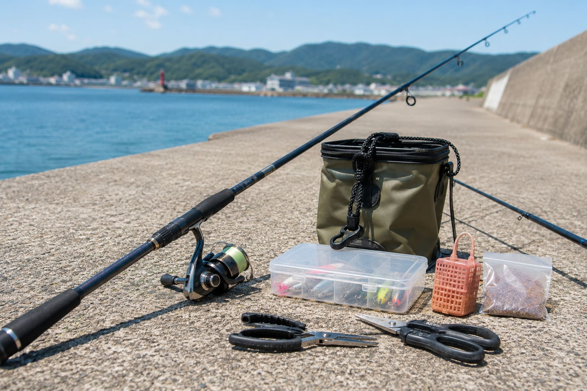

失敗しない場所選び

STEP 1：まずはここから！最初の舞台に最適な「有料釣り施設」
「自然の海はルールも天気も難しそう……」と不安なら、最初の舞台は管理された「有料の海釣り施設（海釣り公園など）」を選ぶのが大正解です。ここには、初心者が釣りの楽しさを知るための最高の環境がすべて詰まっています。
「絶対にそこに魚が居る」という圧倒的な事実
自然の海岸では魚を探すのが大変ですが、海釣り施設は、魚が集まりやすい構造（人工漁礁など）を備えていることが多いで、常に多くの魚が回遊しています。
つまり、「魚がそこに居る」という確証を持って釣りができるため、1匹も釣れないリスクが極めて低いです。
困ったらすぐ頼れる「親切なスタッフさん」の存在
施設には管理スタッフさんが常駐しています。「仕掛けの結び方がわからない」「エサの付け方は？」といった初歩的な疑問にも、優しく親切に教えてくれます。さらに「今はあっちの角でアジが釣れてるよ！」といった最新のヒット情報もその場で教えてもらえるため、これ以上ない安心感があります。
安全設備と快適な環境が充実
多くの施設では、足元に安全な柵（フェンス）が設置されていたり、綺麗なトイレや売店、レンタルタックルが完備されています。
まずはこうした施設で「魚が掛かったときの引き」を存分に体験し、釣りの一連の流れに慣れてみてください。ここで自信をつけてから、次のステップとして一般の防波堤などのリアルなフィールド探しに出かけるのが、実は一番の近道です。
STEP 2：一般の釣り場に行くなら必須！釣行前の「天気予報」チェック
有料施設を卒業し、いよいよ一般の海岸や防波堤へ行くとなったら、まずチェックすべきは「天気」です。海辺の天気は街中よりもシビアに釣果や安全に直結します。
① 「雨」がもたらす海の変化
魚が散ってしまう「塩分濃度」の低下
海にまとまった雨が降ると、表層の海水が薄まります。海水魚の多くは急激な環境変化を嫌うため、深い場所に移動したり、やる気が下がってどこかへ散ってしまったりします。
翌日の「泥濁り」には要注意（特に河口付近）
前日や当日に雨が降ると、川から大量の泥水が海へ流れ込みます。特に河口近くの釣り場は、翌日になるとカフェオレのように茶色く濁ってしまうことも。魚がエサを見つけられなくなるため、大雨の後は数日おいて海が落ち着くのを待つのが賢明です。
② 絶対に侮ってはいけない「雷」の危険性
「これくらいの雨ならカッパを着て続けよう」と思っても、ゴロゴロと雷の音が聞こえたり、予報に雷マークがあったら、即座に釣りを中止してください。
カーボン製の釣り竿は電気を非常によく通します。遮るもののない堤防で竿を振り上げる行為は、自ら雷を呼び寄せる「避雷針」を掲げているのと同じで、命に関わる大変危険な行為です。
③ 「風」の読み方：体感速度と風裏（かぜうら）
海の上は遮るものがないため、予報の数値以上に風を強く感じると思っておきましょう。初心者なら風速4〜5m/s以上になると仕掛けを投げるのも一苦労です。
もし風が強い日は、風向きを確認して、山や崖、堤防の壁が風を遮ってくれる「風裏（かぜうら）」になる釣り場を選ぶのがコツです。嘘のように海面が穏やかなことがあります。
④ 台風の後は「海の底」が大荒れ
台風が通過した後は、天気が回復して一見穏やかに見えても、海の中は大混乱しています。激しい大波が海底の砂や泥、ちぎれた藻などを巻き上げる「底荒れ（そこあれ）」が起きているためです。水がドロドロに濁り、魚の食いが著しく悪くなるため、台風直後は数日あけて海がクリアに戻るのを待ちましょう。

STEP 3：失敗しない「場所選び」とルールの確認
初心者が最初に目指すべきは、足場が平らな「大きな防波堤（堤防）」ですが、そこには複雑なローカルルールが存在します。
① 同じ港でも大違い！複雑なローカルルール
全面釣り禁止・立ち入り禁止の場所
近年、ゴミの問題や安全上の理由から、釣りが全面的に禁止される港が増えています。
同じ港内でも「ここはNG、あっちはOK」
港の一部が「特定の漁師さんの作業場」になっていたり、「養殖設備」があったりする場合、その周辺だけ釣りが禁止されているケースがよくあります。
仕掛けやエサの制限
「投げ釣りは危険だから禁止」「海を汚さないためにコマセ（撒きエサ）は禁止」など、場所特有のルールが設けられているパターンもあります。
② ネットの情報は古い？一番確実な裏ワザ
ネットでの下調べは大切ですが、数年前の古いデータのまま情報が止まっていることがよくあります。かといって、自治体にわざわざ問い合わせるのも面倒ですよね。
一番確実で賢い方法は、目的の釣り場に一番近い「地元の釣具屋さん」に当日立ち寄ることです。大型チェーン店でも個人商店でも構いません。
地元の釣具屋さんは最新の立ち入り禁止エリアやルールを100%把握しています。さらに、買い物のついでに「今日初めてここで釣りをしたいんですが、どこなら竿を出していいですか？」と聞けば、「今、何が、どのエサで、どこに向かって投げれば釣れているか」まで事細かに教えてくれる、最強のコンシェルジュになってくれます。
STEP 4：いざ釣り場に到着！トラブルを回避するスペース確保
待ちに待った釣り場に到着！テンションが上がってすぐに竿を出したくなりますが、焦る気持ちをグッと抑えましょう。港での場所選びには、全員が安全に楽しむための「絶対的な優先順位」があります。
第一優先：その港で「仕事をしている人」の邪魔を絶対にしない
そもそも防波堤や港は、漁師さんたちが仕事をするための場所（職場）であり、釣り場として開放されているのは「ご好意」によるものです。トラックが行き来する場所や、漁具が置いてある近くでの釣りは絶対に避けましょう。
特に係留してある「船の周り」は初心者は全面NGです。万が一、投げ損じたり風に流されたりして、高価な船体に針やオモリをぶつけて傷をつけたり、船のロープに仕掛けを引っ掛けたりすると大トラブルに発展します。船の周辺はスルーするのが鉄則です。
第二優先：先客への配慮（「竿＋針の長さ」の安全圏）
漁師さんの邪魔にならない場所を見つけたら、次はすでに釣りをしている先客との距離感です。
仕掛けが横に流されて絡まない距離を取ることはもちろんですが、それ以上に意識すべきは「物理的な衝突を避ける距離」です。
人が竿を後ろに振りかぶって投げる際、【その人の腕の長さ＋竿の長さ＋垂らしている針までの糸の長さ】の分だけ、後ろや横に鋭い針がぶんぶんと振り回されることになります。先客が思いっきり竿を振ったときに、確実にその軌道に入らない、絶対に安全が保てるだけの十分なスペースを開けて釣り座を構えましょう。
第三優先：海を観察して「釣れるポジション」を見極める
安全なスペースを確保できたら、ようやく釣りの準備です。
ただなんとなく平らな場所に立つのではなく、周囲で釣れている人が「何を、どうやって、どの深さで釣っているか」を観察しましょう。また、堤防の角（コーナー）や、波がぶつかって白く泡立っている場所など、海に変化がある場所を探すと、魚に出会える確率がグッと高くなります。